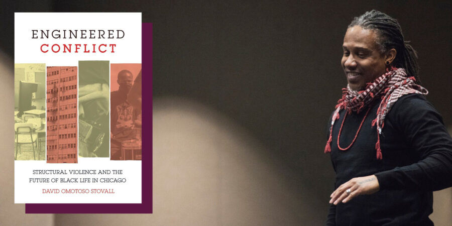

Plans That Did Not Transform
Drawing together historical and political analysis to shed light on the politics of disposability through housing instability, criminalization, and school closures
Join us for a conversation with author, professor, and community organizer David Stovall, on the publication of his new book, Engineered Conflict: Structural Violence and the Future of Black Life in Chicago. Stovall will be joined by Open Mike Eagle, the museum’s 2026 Artist as Instigator, for a conversation highlighting the book’s second chapter, “Plans That Did Not Transform: the Chicago Housing Authority’s Commitment to Engineered Conflict,” in which Stovall argues that the role of CHA is central in understanding how state-sanctioned violence and abandonment impacts low-income communities.
Engineered Conflict (Haymarket Books, 2026) calls for a powerful movement against the displacement, disinvestment, and disposability of Chicago’s Black population.
FREE. Space is limited, please register in advance. The event will be recorded and a video shared at a later date.
A book signing will take place after the conversation portion of the event.